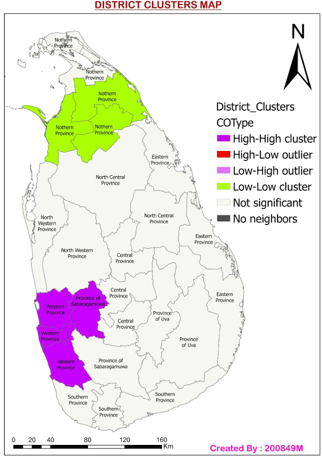
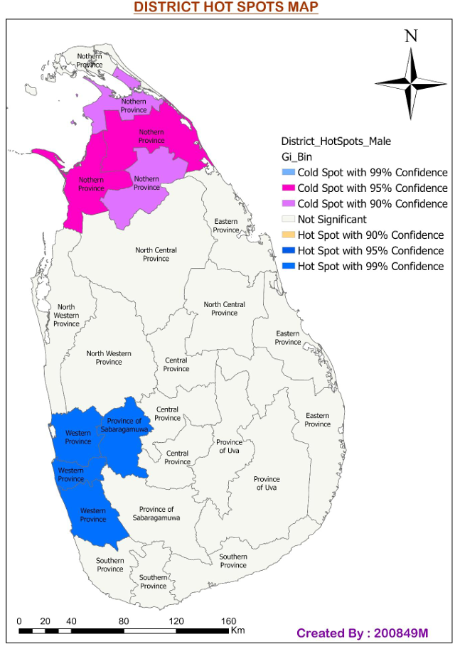

Visual Insights from Spatial Data Analysis
This map highlights the spatial distribution of socio-economic clusters across the districts of Sri Lanka. Areas with high cluster significance are shaded distinctly to indicate regional disparities. Such visual representation helps policymakers to focus resources effectively in low-performing clusters.
This map visualizes statistically significant cold and hot spots for the male population across Sri Lanka's districts. Pink and purple shades indicate 95% and 90% confidence cold spots, while blue shades show 99% hot spots. This kind of hotspot analysis is vital for targeting specific regions in public health, education, and employment planning.
